Finca en venta · Ref. JMK-OROTINA-110-finca
Finca con cabaña rústica, pozo de agua y vistas a la montaña
Lote 110, Condominio Quintas Casa de Campo · La Coyotera, Orotina, Alajuela
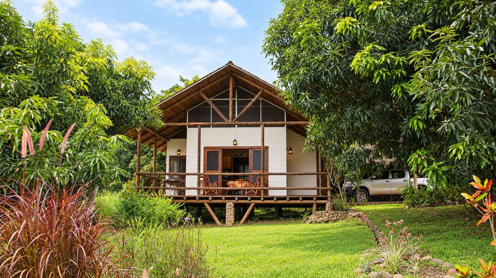
$250,000 USD
A 4 km del centro de Orotina
9,136 m²Terreno
1Dormitorio
1Baño
PropioPozo registrado
La propiedad
Ubicada a solo 4 kilómetros del centro de Orotina, esta finca de 9,136 m² ofrece un entorno natural privilegiado, perfecta para quienes buscan tranquilidad, contacto con la naturaleza y un alto potencial de desarrollo.
Incluye una acogedora cabaña de estilo rústico en madera, con cocina, comedor, dormitorio, baño con ducha en piedra y terraza techada, ideal como punto de partida para su futura casa de campo, con amplio espacio para ampliaciones. Un rancho de paja funciona como cochera.
Características
- Naturaleza: jardines arbolados con especies frutales, teca y árboles sabaneros.
- Vistas: atardeceres panorámicos y vistas hacia las montañas.
- Topografía: mayormente plana, ideal para piscina o nuevas áreas de esparcimiento.
- Autosuficiencia: servicios públicos completos y pozo de agua propio registrado.
- Ubicación: aislada del ruido, con fácil acceso a supermercados, clínicas y la ruta a las playas del Pacífico Central.
Ideal para
- Casa de campo o vivienda permanente
- Proyecto turístico o eco-lodge
- Inversión de retiro en Costa Rica
- Estilo de vida sostenible y al aire libre
Galería
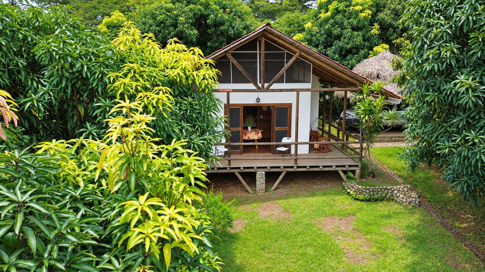
Cabaña rodeada de árboles frutales
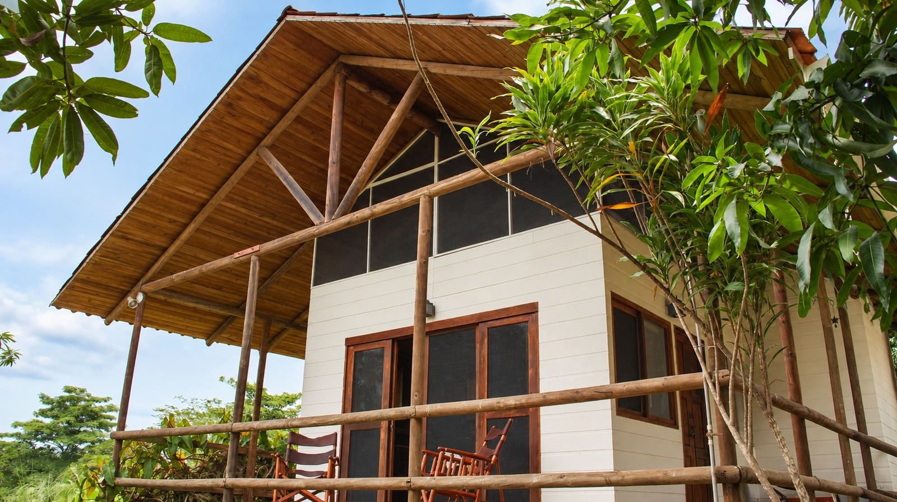
Terraza techada en madera
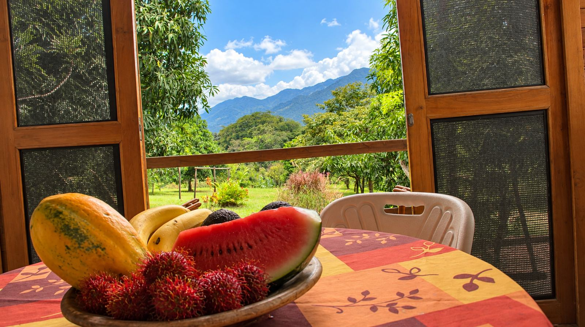
Vista a la montaña desde el comedor
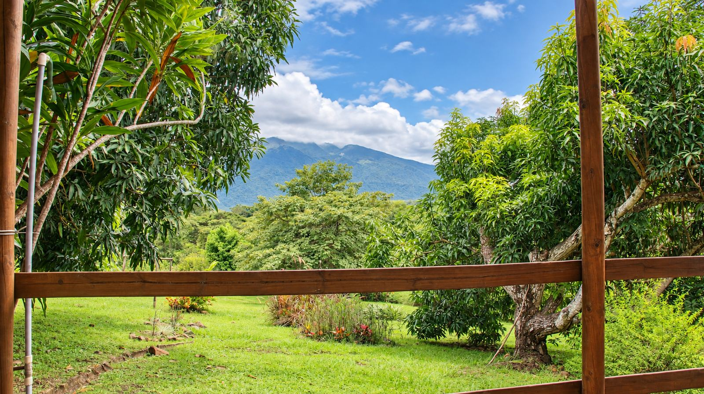
Vista a las montañas desde la terraza
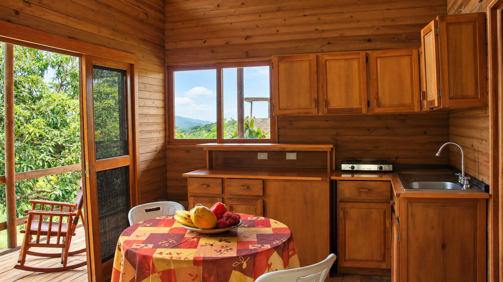
Cocina en madera con vista
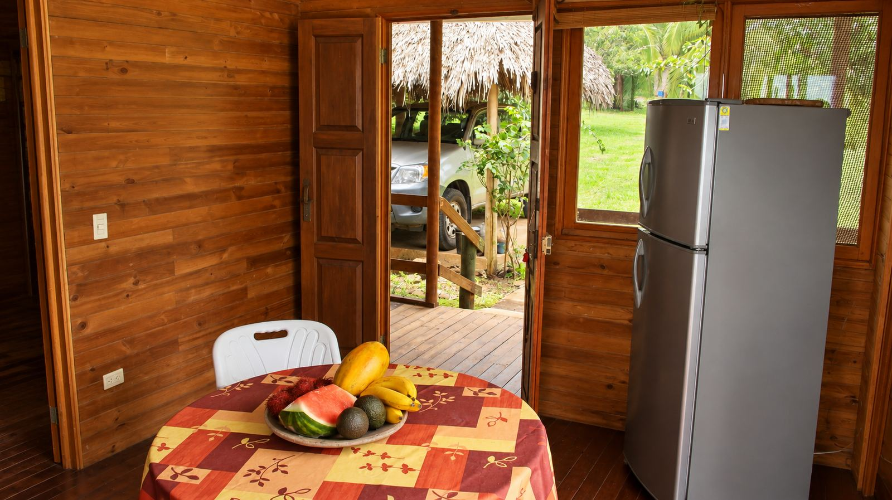
Comedor y salida a la terraza
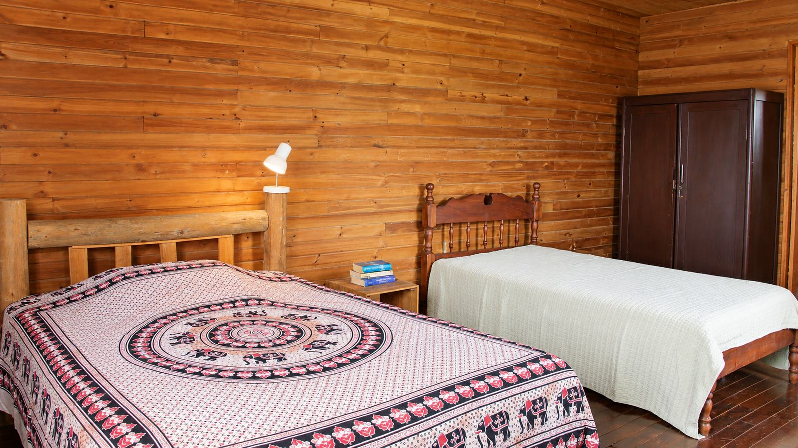
Dormitorio con dos camas
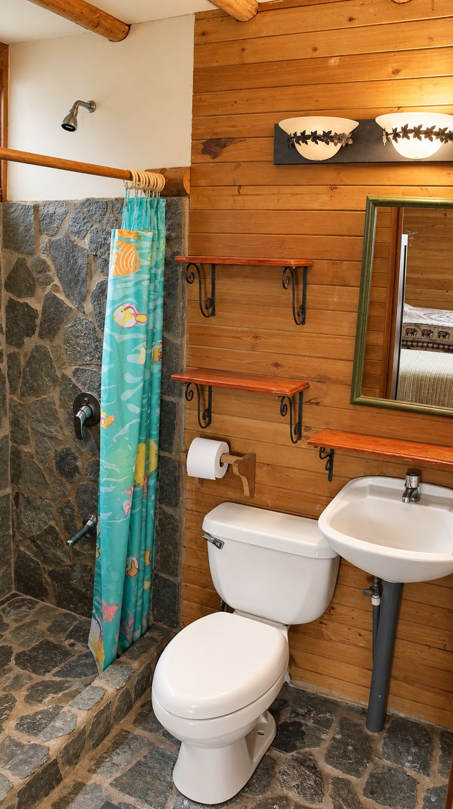
Baño con ducha en piedra
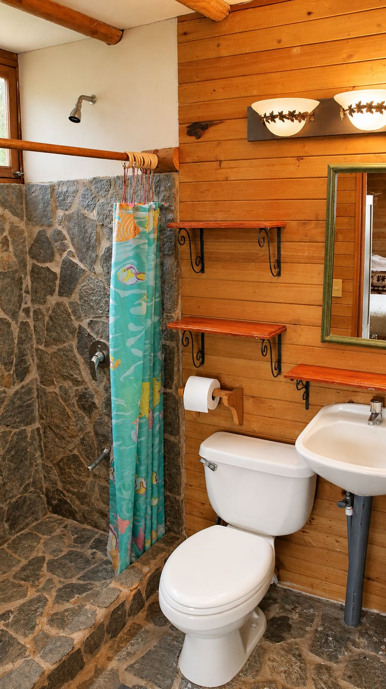
Baño revestido en madera
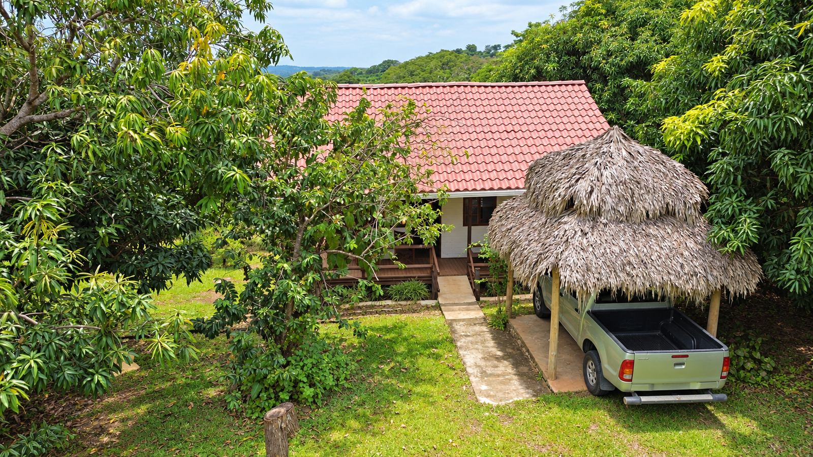
Acceso y rancho de paja
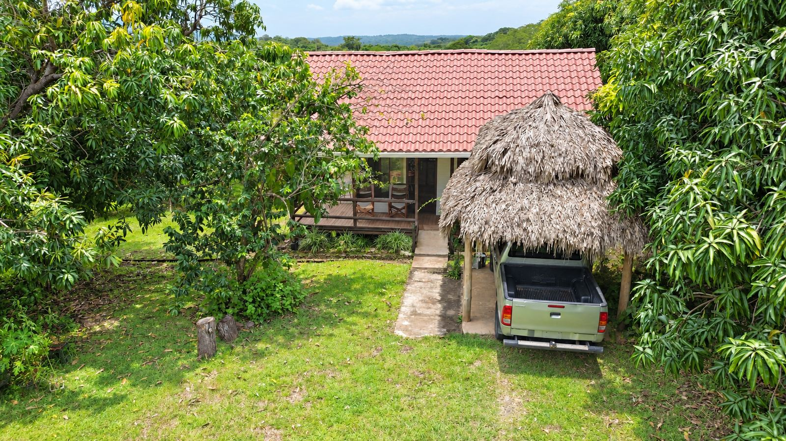
Rancho de paja como cochera
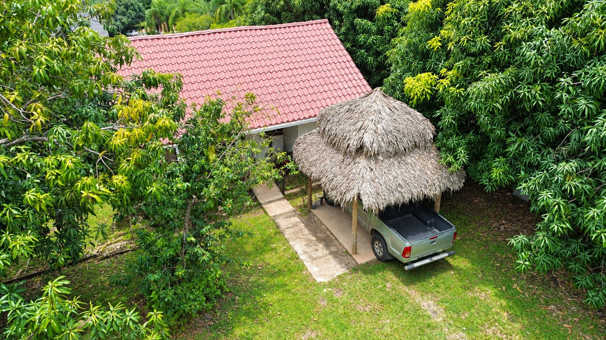
Vista aérea de la cabaña
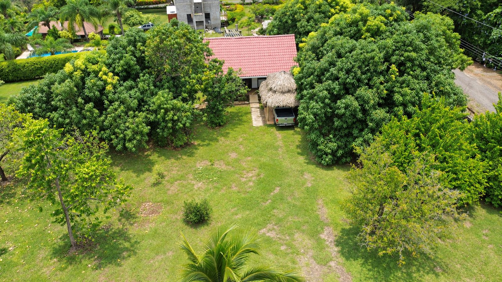
Vista aérea del terreno plano
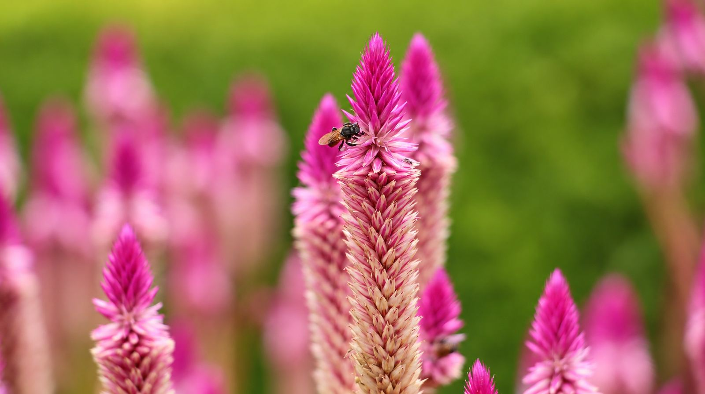
Flores del jardín
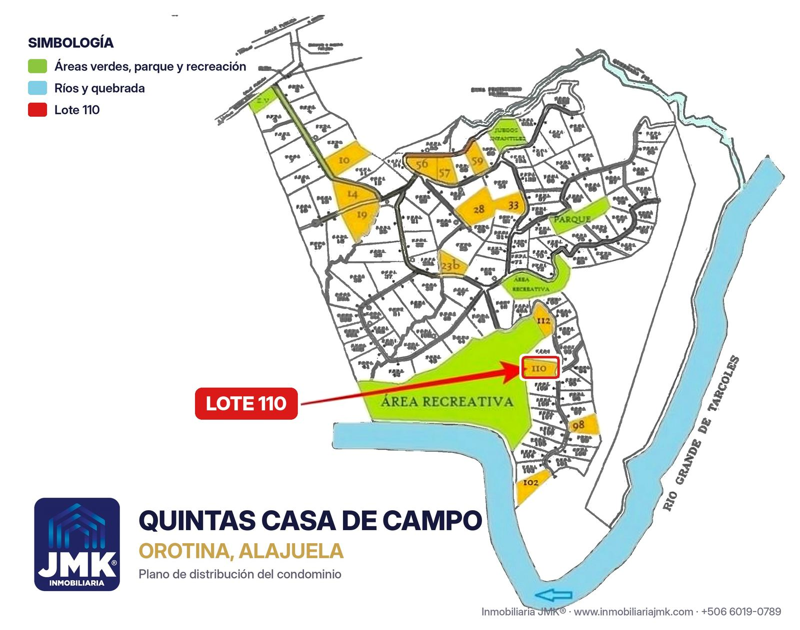
Plano del condominio: Lote 110
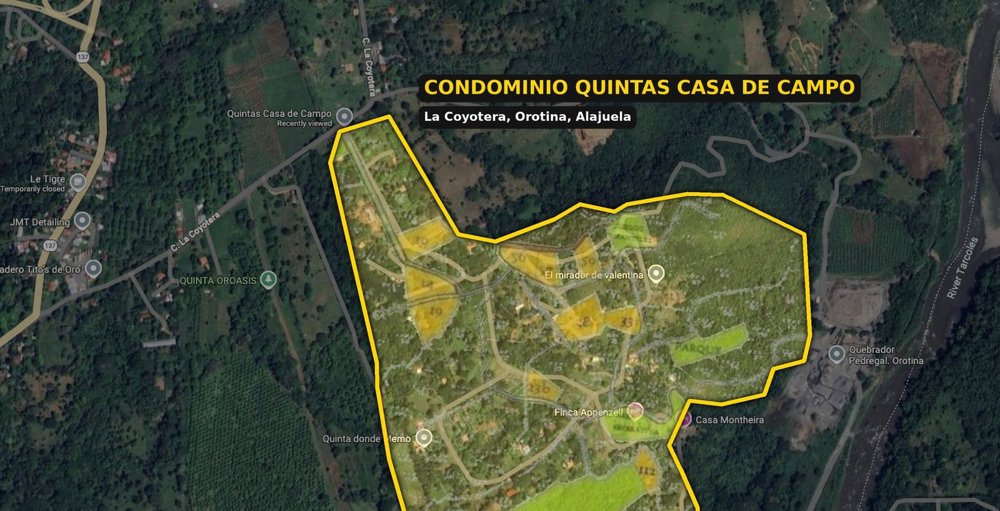
Condominio Quintas Casa de Campo
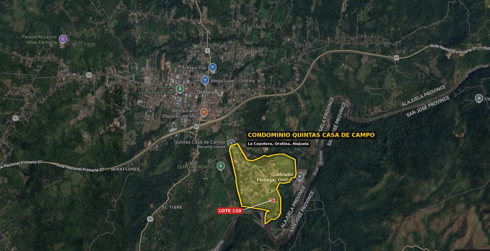
Ubicación respecto a Orotina centro
Agende su visita
Teléfono y WhatsApp: +506 6019-0789 · info@realestatejmk.com
www.inmobiliariajmk.com · linktr.ee/inmobiliariajmk
Inmobiliaria JMK® · Servicios Inmobiliarios Real Estate JMK S.R.L.
Teléfono y WhatsApp: +506 6019-0789 · info@realestatejmk.com
www.inmobiliariajmk.com · linktr.ee/inmobiliariajmk
Inmobiliaria JMK® · Servicios Inmobiliarios Real Estate JMK S.R.L.